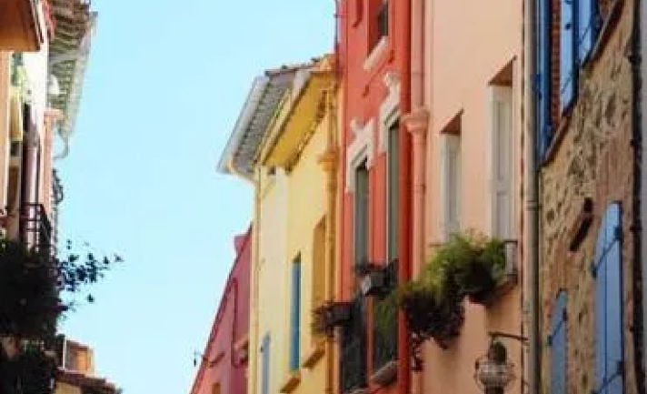
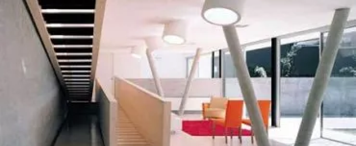

Цвет в архитектурном проектировании
Важнейшим композиционным средством в руках архитектора при проектировании зданий является цвет. Свет и цвет неотделимы друг от друга. Окружающий мир воспринимается цветным благодаря лучам света, отражающими от небосвода, различных предметов и т. д. Человеческое зрение обладает чудесным качеством воспринимать весь мир цветным. Но цвет может вызвать не только положительные эмоции, но и отрицательные.
Задачей архитектора, разрабатывающего цветовую гамму, является достижение его максимального содействия трудовой деятельности человека.
Цвет может служить также для зрительного изменения пропорции помещения, улучшения его микроклимата.
Цвет обладает способностью выявлять пластические свойства помещений, может способствовать организации пространства и быть средством направлении движения. При помощи цвета может быть введен определенный ритм, созданы цветовые акценты в местах композиционных узлов, образована психологическая взаимосвязь интерьеров.
Разработку цветового решения можно условно подразделить на три стадии.
Первая стадия - выбор цветовой гаммы в системе пространств или отдельном пространстве. Выбор колорита обычно связан с ориентацией застройки или внутренних помещений. Ориентированные на север помещения обычно окрашивают в теплые цвета: кремовый светло-коричневый, абрикосовый и т. п. Это отчасти компенсирует недостаток прямых солнечных лучей в помещении, делает зрительно его микроклимат более теплым. В северных районах можно окрашивать в теплые цвета и те помещения, которые ориентированы на юг, так как там можно не опасаться перегрева помещений.
Желательно окрашивать в теплые или нейтрально-теплые цвета помещения, в которые не проникает естественный дневной свет. Холодный колорит могут иметь помещения, ориентированные на юг или юго-запад, в южных и центральных районах, а также помещения с большими тепловыделениями.
Холодноватый колорит бывает целесообразным при необходимости создания успокаивающего микроклимата. Холодные - голубые, серо-голубые, зеленые цвета уменьшают возбуждение - поэтому их применяют при окраске спален детских учреждений, классных комнат и т. п. Большие помещения не должны окрашиваться в чистые насыщенные тона. В таком перенасыщенном цветом помещении человек будет чувствовать себя плохо, быстро утомляться. В насыщенный чистый цвет в большом помещении целесообразно окрашивать лишь небольшие детали: светильники, цветочники, панно, элементы мебели и т. н.
Введение в общую спокойную гамму разных цветовых оттенков бывает нужным для смены впечатления монотонности - особенно, если трудовой процесс людей в этих помещениях однообразен. Небольшие помещения, в которых человек находится непродолжительное время, можно окрашивать в более интенсивные цвета.
Если цвет в интерьере и экстерьере жилых и общественных зданий во многом зависит от субъективного подхода художника, то в интерьере промышленных зданий цвет предопределяется назначением этих зданий и их злементов, ориентацией, характером тепловыделений и т. д. Поэтому для промышленных зданий разработана регламентация цветов.
Специальная инструкция по применению цвета в промышленном интерьере вводит применение цвета в закон для основных видов производства. Общими для всех производств являются опознавательные окраски коммуникаций и предупредительные цвета опасных зон и предметов, а также зон безопасности.
В красно-черную, желто-черную или оранжево-черную полосу окрашиваются подкрановые балки, крюки кранов, цеховой транспорт. Зоны безопасности выделяются зеленым цветом. Все трубопроводы окрашиваются в цвета согласно специальному коду.
Применением определенных цветов можно достичь различного психологического эффекта. Например, введение в интерьер красного цвета создает впечатление торжественности, праздничности. Возбуждающе действуют на человека контрастные сочетания цветов. Нюансные сочетания, наоборот, успокаивают.
Вторая стадия разработки цветового решения - выбор соответствующих цветовых соотношений, определение контрастов взаимодействующих цветов и степени различия яркостей. В данном случае критерием может служить количество цвета.
Третья стадия - выбор материалов для отделки и подбор источников света. Здесь архитектор должен учитывать свойства отделочных материалов, характер фактуры их поверхностей и характер естественного и искусственного освещения. Последний фактор важен потому, что некоторые цвета искажаются в лучах искусственного освещения, спектр излучения которых отличается от белого дневного света. Например, лампы накаливания, имеющие желтый спектр излучения, или некоторые люминесцентные лампы с холодным спектром излучения (ЛХВ) сильно искажают цвет окраски помещения.
При лампах накаливания повышается насыщенность желтых и красных тонов, голубые тона зеленеют, фиолетовые и синие чернеют. Короче говоря, спектр лучей ламп накаливания накладывается на цвет окрашенных поверхностей и происходит смешение цветов.
Цветовой климат не всегда является определяющим фактором при выборе цветовой гаммы.
Как правило, выбор цветового решения в интерьере подчиняется более сложным закономерностям, но в любом случае сочетания цветов должны быть гармоничными. Существует ряд теорий применения цвета в интерьере: теория оптимальных цветов (профессора Рабкина), согласно которой в интерьере следует применять лишь наименее утомительные для глаз зеленые и желто-зеленые цвета: теория нейтрального цвета; теория ведущего или доминирующего цвета: психофизиологическая теория; теория фокусирующего цвета профессора Бирпа; теория природного цвета и др. Использование каждой из этих теорий возможно в конкретных случаях. Например, при цветовом решении интерьера торгового зала магазина, где продают яркие предметы, целесообразно пользоваться теорией нейтрального цвета, в соответствии с которой все ограждающие поверхности и оборудование должны иметь нейтральную ахроматическую окраску, на фоне которой цвета товаров выглядят еще более насыщенными.
Кроме того, ахроматический тон гармонизируется с любым цветом. При цветовом решении системы интерьеров возможно применение теории ведущего цвета. Всегда можно использовать теорию природного цвета, которая исходит из распределения цвета в природе, обычно вызывающего у человека положительные эмоции. Корни этой теории лежат в древней китайской философии, а впоследствии она была развита и дополнена немецкими учеными Фрилингом и Ауэром.
Психофизиологическая теория цвета учитывает различие в восприятии цвета людьми разного пола и возраста, создание иллюзии легкости и тяжести, холода и тепла, угнетающее и возбуждающее воздействие ряда цветов на человека и другие факторы. Эту теорию нужно применять для окраски помещений, где человек проводит большую часть своего времени: жилых и производственных комнат в учебных и лечебных заведениях, столовых и т. д.
Гармоничность цветовых сочетаний зависит от знаний, опыта и интуиции архитектора-художника.
ПОХОЖИЕ СТАТЬИ
Тренды и тенденции на рынке проектирования фасадных систем, 20 мая, Севастополь
09.12.2021На бизнес-встрече собрались руководители архитектурно-проектных организаций и производители и поставщики фасадных систем, чтобы обсудить тренды, тенденции и передовые решения.
О блоге, профессии архитектора, трендах и архитектуре Севастополя, 21 мая
09.12.2021Артур Купрейчук автор блога ArchiTrip, архитектор(HENN Architekten, Architekten von Gerkan, Marg and Partners). Эфир прошел в нашем профиле в Instagram.Читать интервью